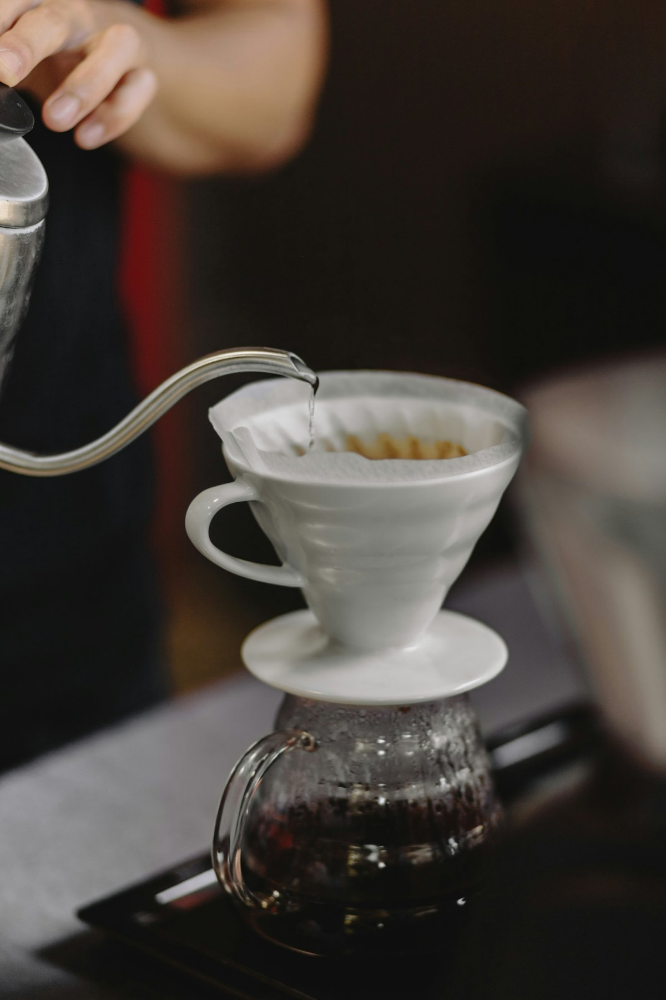
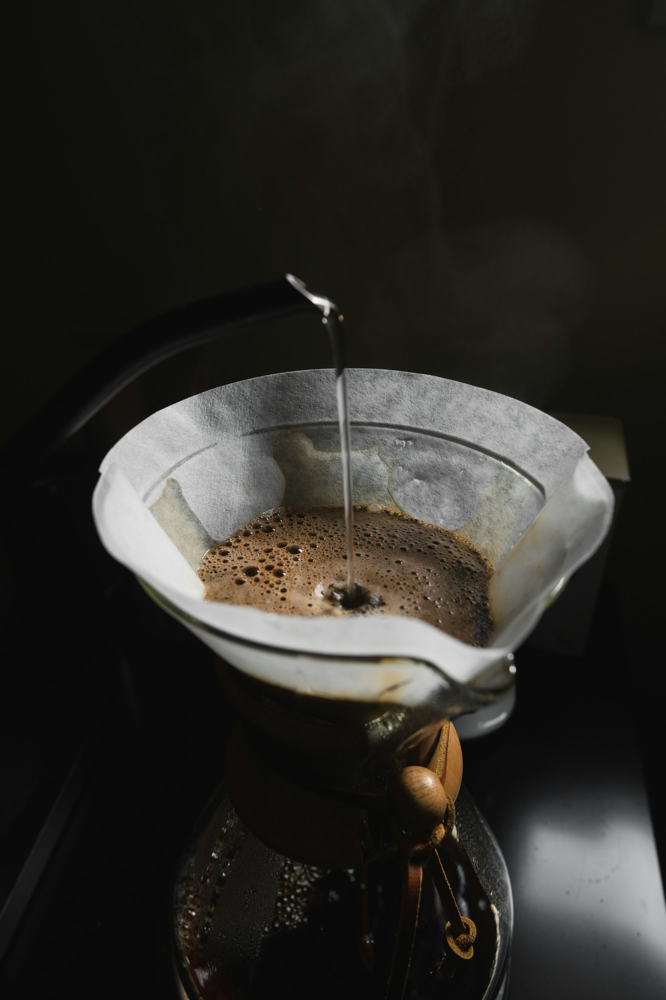
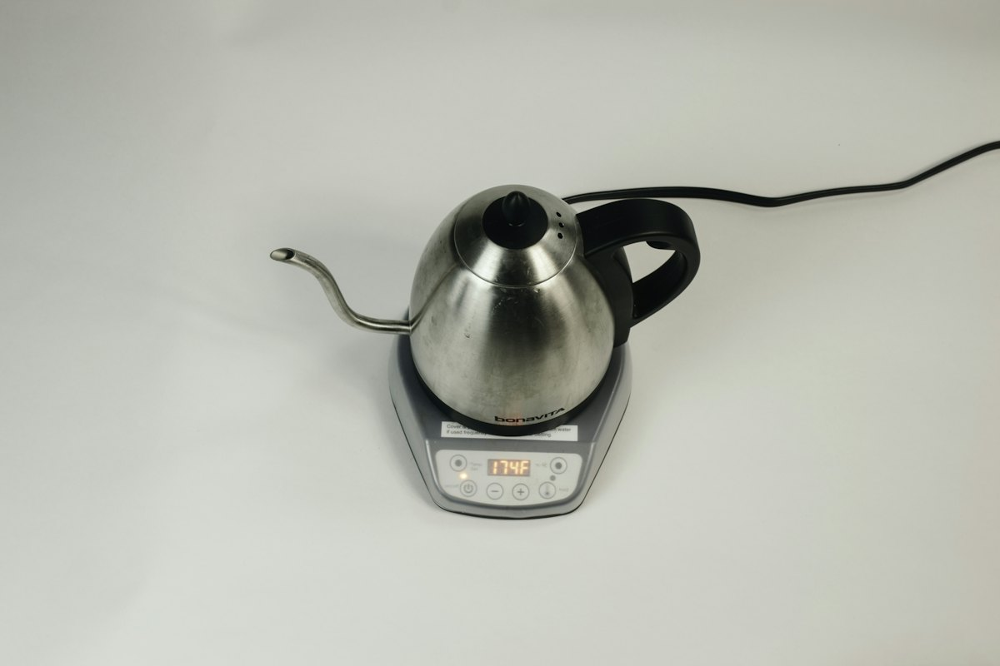
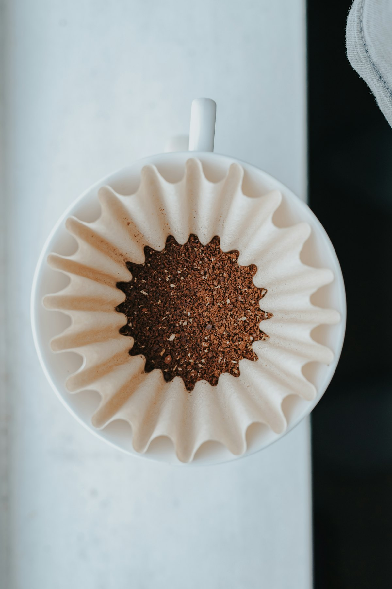
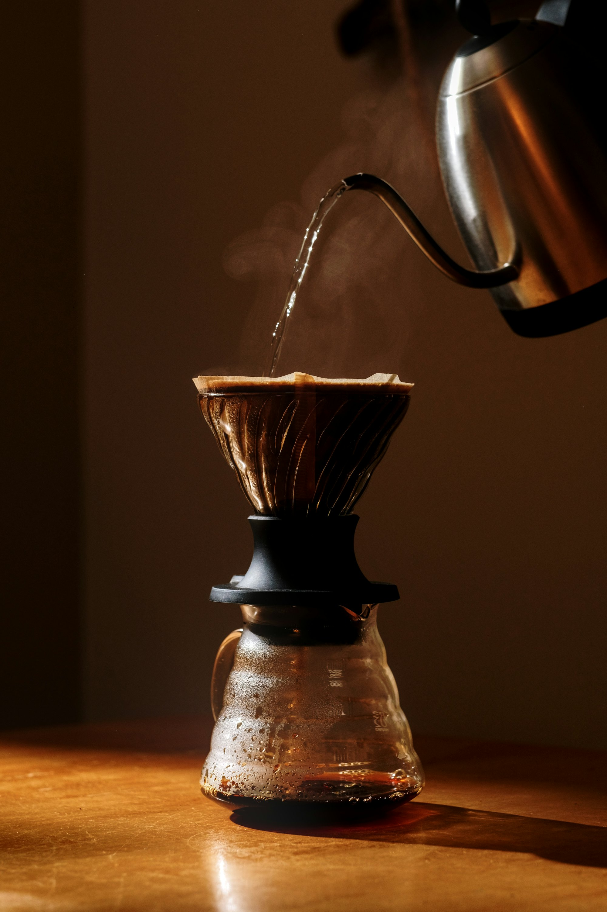

コーヒードリップポット 雫
0.9Lと0.5Lの2サイズ。点滴抽出ができる、タカヒロのオリジナルです。

コーヒードリップポット・厨房用品 新潟県燕市
昭和50年、新潟県燕市で設立。極細の注ぎ口で点滴抽出ができるオリジナルのドリップポット「雫」をはじめ、業務用の厨房用品をお届けしています。
コーヒードリップポット・厨房用品 新潟県燕市
昭和50年、新潟県燕市で設立。極細の注ぎ口で点滴抽出ができるオリジナルのドリップポット「雫」をはじめ、業務用の厨房用品をお届けしています。
極細のパイプから
真下へ、 一滴ずつ。
注ぎ口から真下に落ちるので、初めての方でも、ゆっくり思いのままに注げます。
0 滴
3Dのイメージです
多くのお客様からご要望の多かった「点滴抽出」ができるよう、雫は注ぎ口を極細のパイプにしました。お湯が注ぎ口から真下に落ちるので、初めての方でもゆっくり、思いのままに注げます。
ステンレス製で錆に強く、直火にも電磁調理器にも対応。蓋を取れば8.5cmの開口部から手が入るので、お手入れも簡単です。

0.9Lと0.5Lの2サイズ。点滴抽出ができる、タカヒロのオリジナルです。

ドリップポットに温度計を取り付けて、お湯の温度を見ながら淹れられます。

バットやトングスタンドなど、プロの厨房で使われる道具も取りそろえています。

価格は現在のオンラインショップの表示（税込）をもとにしています。
| お問い合わせ | お電話・メール・オンラインショップで承ります |
|---|
業務用のご注文や、別注品・特注品のご相談もお気軽にどうぞ。